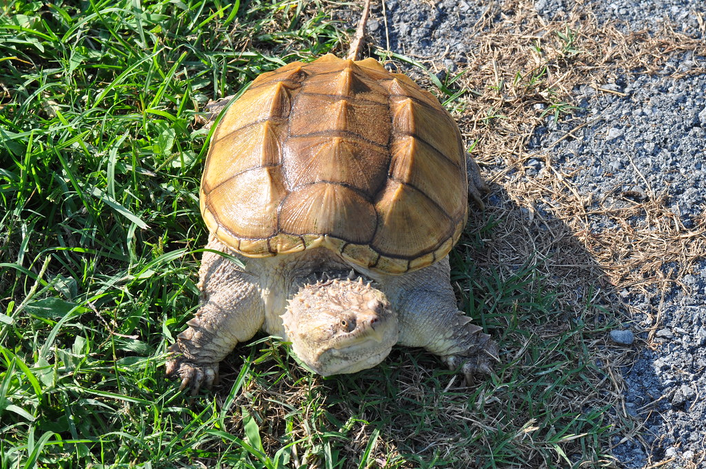

Tortuga Caiman

Permanece en el fondo de las pozas esperando a sus presas, especialmente peces. También puede enterrarse en la hojarasca húmeda de las orillas de ríos o lagos. Se le observa además en pantanos, Es una especie omnívora, come insectos, cangrejos, camarones, bivalvos, lombrices, caracoles, gusanos tubifícidos, esponjas de agua dulce, ranas, peces (constituyen hasta un 35% de su alimentación), sapos (adultos, renacuajos y huevos), salamandras, serpientes, aves y mamíferos pequeños.
- Presenta tubérculos en su cuello y piernas.
- El cuello, las patas y la cola tienen un color amarillento y la cabeza oscura. Puede pesar de 4 a 15 kg.
- En su hábitat natural, se estima que esta tortuga tiene una esperanza de vida de hasta 30 años y en cautiverio de hasta 47 años.
- Es bastante parecido al de un cocodrilo o un lagarto pequeño, su mordedura es bastante rápida y fuerte, lo cual la convierte en una gran cazadora.
- Cuando llega el tiempo de la hibernación buscan un ambiente con bastante lodo o limo donde puedan enterraste y estar tranquilas.
Pagina Principal